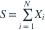
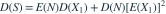

，与独立同分布的  相互独立，。令
相互独立，。令
相互独立，。令 
（ 时 ），求 。- A
- B
- C

- D
我已思考，展开答案与解析
正确答案：D

。- 。
易错提醒不能把随机项数直接当作常数，只计算条件方差。
数学三·概率统计基础专题 · 数学三概率统计基础专题·原创第24题
按数学三常见概率统计知识点原创；不是历年真题或教材原题。
相互独立，。令 
（ 时 ），求 。
。数学三·概率统计基础专题 · 数学三概率统计基础专题·原创第24题
按数学三常见概率统计知识点原创；不是历年真题或教材原题。